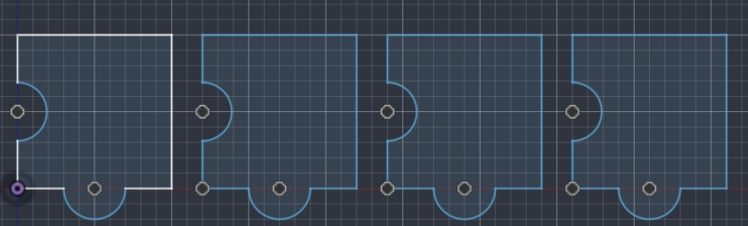
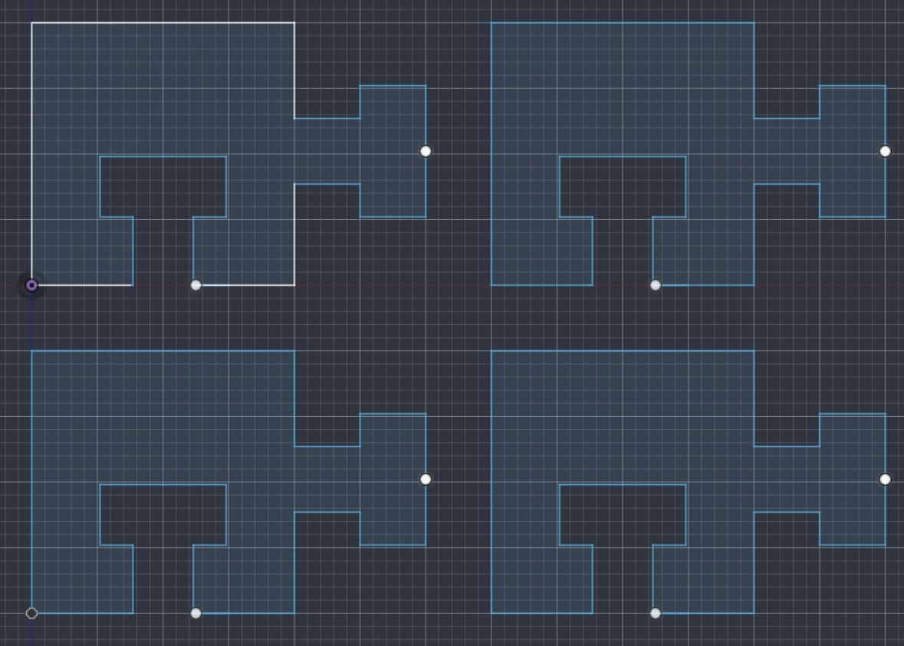
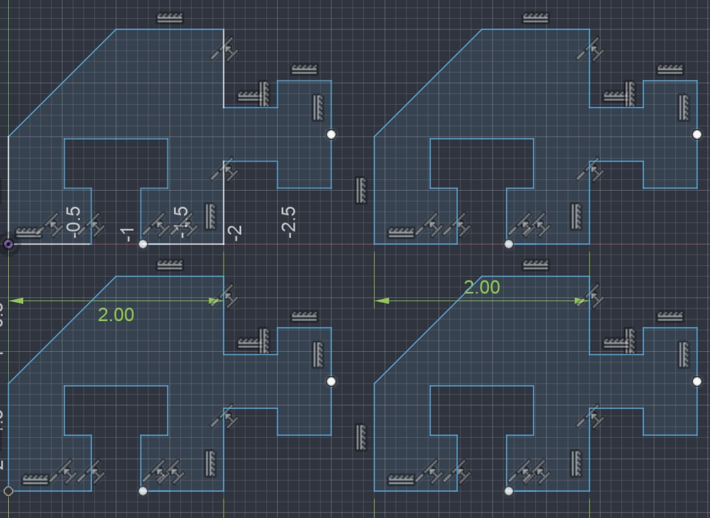
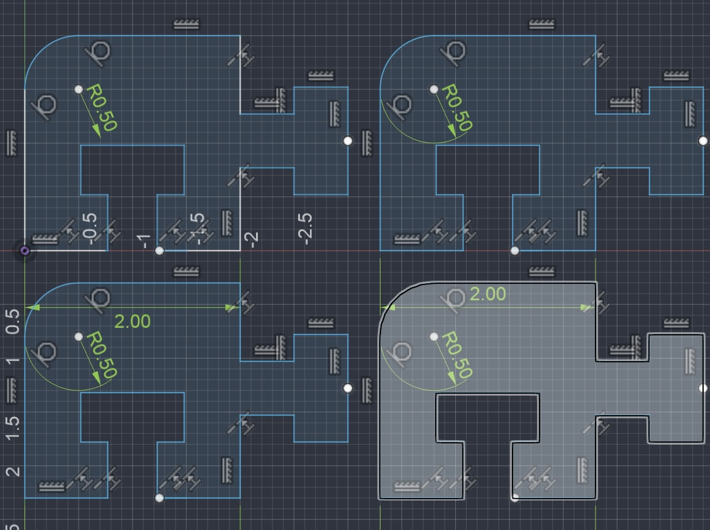
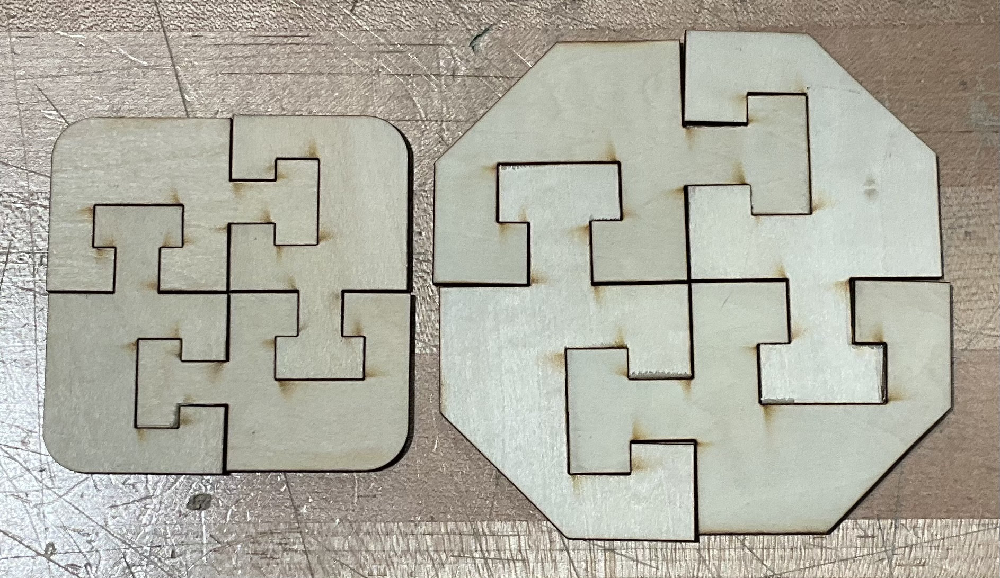

Project Goals:
- Determine the tolerance of Belen's Glowforge laser cutter.
- Document and reflect upon thought processes.
- Design a pressure fitting set of puzzle pieces and cut them out with the laser cutter.
Tools Used:
- Autodesk Fusion.
- Glowforge Web Version.
- Calipers and Ruler.
- Three 0.125 inch thick panels of Medium Basswood Plywood.
Process:
In order to test the tolerance, I designed a very simplistic set of puzzle pieces with semi-circular joints that would not take tolerances into account whatsoever.

I realized after I printed the original design that the joint concept would not have worked regardless of the pressure applied by the fit, so I reimagined them as a "T" shape.

After it was cut and as expected, did not properly fit, I measured the connecting joints in order to determine the true tolerance of the laser cutter, which ended up being 0.02 inches.

I then promptly redesigned the original puzzle to fit the new tolerance and included a sliced corner piece, which should have worked, but I scaled the piece to be larger than it was designed to be because I though it would look better, causing the pieces to not fit together perfectly.

After making that mistake, I decided to round the outer corners instead and keep the original proportions, which allowed the laser cutter to execute its job perfectly, finally ending the endeavor.

What I learned:
- I learned that you should never simply scale the measurements of a part if it includes joints.
- Always make sure to properly apply the tolerances to any and all joints.
- I learned that if you apply an incredibly accurate tolerance to the joints, you can make the fit tight enough for the pieces to behave as a single slab of wood.
- I learned how to use the web version of Glowforge.
- Always double check which setting the object you are cutting is set to, I accidentally set my first piece to score.
- If you do not turn on the extractor, the machine will start to release smoke and make the entire room smell like burnt wood.